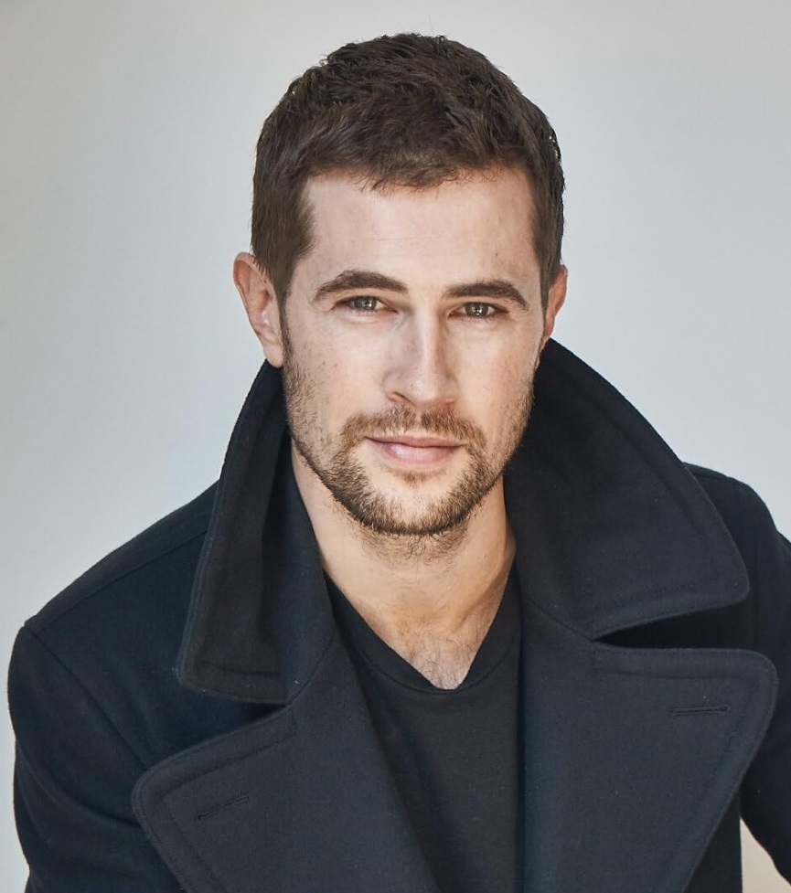
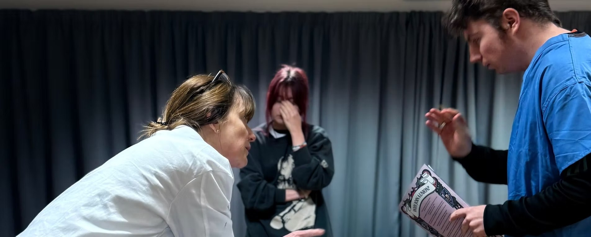

Professional Acting Authority
David Berry
David brings working-actor insight, professional screen standards, preparation, continuity, camera discipline, and advanced adjustment.
ACCESS ACTING STUDIO
Learn to access truthful behaviour and shape it with purpose in service of the story.
The room
Actors build their characters and scenes, rehearse, receive notes, shoot the work, and review what the camera records. Playback becomes a tool for diagnosis, correction, and progress.
The standard is practical, empathetic, and exact: feedback is specific, disciplined, respectful, and focused on continual progression toward mastery.




About the founders
Access Acting Studio was founded by Robert Rosina and David Berry to give actors a practical method for accessing truthful behaviour and shaping it with purpose in service of the story.

Professional Acting Authority
David brings working-actor insight, professional screen standards, preparation, continuity, camera discipline, and advanced adjustment.

Film Production Authority
Robert brings production-focused actor training, technique foundations, scene construction, film studies, and narrative theory.
David Berry is an internationally recognised actor whose work spans television, film, and theatre. He is best known for his standout ongoing role as Lord John Grey in the global series Outlander and as James Bligh in the award-winning series A Place to Call Home. He brings students a working actor’s understanding of preparation, continuity, adjustment, camera discipline, and story service.
Robert Rosina brings a production-focused approach to actor training, shaped by a degree in filmmaking, broad study of acting technique, and professional experience in strategic communication. Together, Robert and David teach The Access Method, combining practical technique, professional screen experience, scene work, camera practice, playback, and purposeful adjustment.
The method helps actors build performances with structure, life, and purpose through choices they can test, refine, and repeat on camera. This is screen training for actors who want to stop guessing, understand their craft, and make their work land.
The Access Method
The Access Method is the teaching spine of the school: practical technique, professional screen experience, scene work, camera practice, playback, and purposeful adjustment.
Actors learn to stop guessing, build behaviour with structure, test choices on camera, and refine what lands in service of the story.
Become more available, responsive, connected, and believable under imaginary circumstances.
Use objective, relationship, action, obstacle, stakes, and adjustment to build the scene.
Make choices that move the scene, affect the other person, and clarify the work.
Use diagnostic filming and playback to see what reads, what lands, and what needs adjustment.
Launch course
Spend one weekend on camera. Learn the foundations of The Access Method, rehearse a scene, film it, review playback, receive professional notes, and leave with training footage for private review.

Diagnostic filming is a learning baseline: evidence, not judgment. Showreel-level filmed scenes may be offered later as a separate premium product.
The Access Standard
Stop obsessing over your emotions in a scene. What matters is what you make the audience feel.Robert Rosina
The pathway
Access is designed to move actors from first practical experience into foundations, private coaching, labs, specialist screen work, and later premium filmed products.
First practical experience: technique, camera, playback, filmed scene, notes, and review footage.
A 10-week foundation course in The Access Method for truthful screen performance.
Continuing students develop deeper scene work, playback, adjustment, and repeatability.
Self-tape, period screen acting, heightened and genre performance, and showreel lab.
Expressions of interest
The first weekend is a controlled launch: technique, camera, playback, filmed scene, and professional notes. Register to receive dates, venue details, course information, and enrolment instructions when the intensive opens.